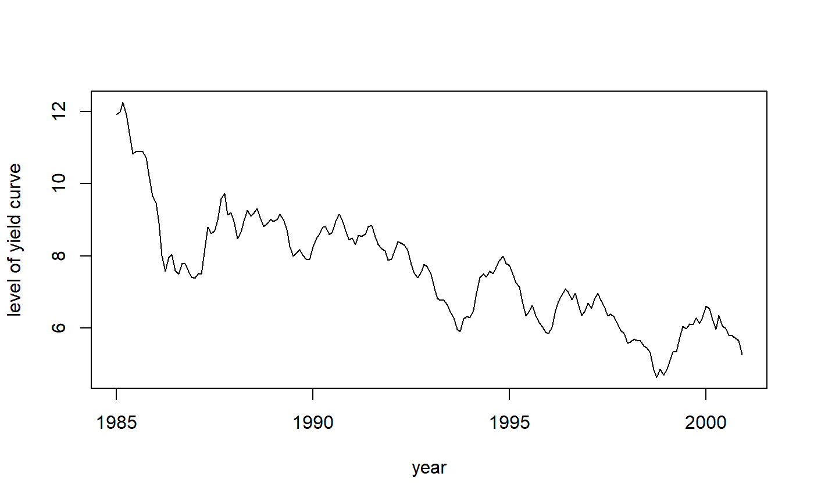

A lot of models can be put in State Space form. Although the statespacer package covers a lot of those models by providing the most common components you would expect to see in a State Space model, there may always be the need to implement something more sophisticated and novel. For this purpose, the statespacer package provides the option to specify a component yourself!
In this vignette, you will learn how to specify a component yourself.
We will implement the dynamic Nelson-Siegel model as specified by Diebold, Rudebusch, and Aruoba (2006), using
interest rates of the Federal Reserve. See ?FedYieldCurve
for details.
The dynamic Nelson-Siegel model as specified by Diebold, Rudebusch, and Aruoba (2006) is as follows:
\[ \begin{aligned} y_t(\tau) ~ &= ~ \beta_{1t} ~ + \beta_{2t} \left( \frac{1 ~ - ~ e^{-\lambda\tau}}{\lambda\tau} \right) ~ + ~ \beta_{3t} \left( \frac{1 ~ - ~ e^{-\lambda\tau}}{\lambda\tau} ~ - ~ e^{-\lambda\tau} \right) ~ + ~ \varepsilon_t(\tau), &\varepsilon_t ~ &\sim ~ N(0, ~ \sigma^2I_p), \\ \beta_{t+1} ~ &= ~ \left( I ~ - ~ \Phi\right)\mu ~ + ~ \Phi\beta_t + \eta_t, &\eta_t ~ &\sim ~ N(0, ~ \Sigma_{\eta}), \\ & &\beta_1 ~ &\sim ~ N(\mu, ~ P_{\beta}), \end{aligned} \]
where \(y_t(\tau)\) is the interest rate at time \(t\) for maturity \(\tau\), \(\lambda\) is a constant, \(p\) is the number of maturities (dependent variables), \(\beta_t\) is the unobserved vector containing the factors \(\beta_{1t}\), \(\beta_{2t}\), \(\beta_{3t}\), \(\mu\) is a vector containing the means of the factors, \(\Phi\) is a vector autoregressive coefficient matrix corresponding to a stationary process, and \(P_\beta\) is the initial uncertainty of \(\beta_1\) that is chosen such that \(P_\beta ~ - ~ \Phi P_\beta \Phi^{\top} ~ = ~ \Sigma_\eta\). The factors in \(\beta\) have an interesting interpretation: \(\beta_1\) can be seen as the level for all interest rates, \(\beta_2\) identifies the slope of the yield curve, and \(\beta_3\) represents the shape of the yield curve.
Now that we have summarised the dynamic Nelson-Siegel model, we can go on and fit it using statespacer!
First, we load the data. We use the dataset contained in this
package, see ?FedYieldCurve for details. This dataset
consists of the monthly US interest rates for 8 different maturities
from January 1982 up to April 2022. The maturities are 3, 6, 12, 24, 36,
60, 84, and 120 months. For this exhibition, we make use of the period
from January 1985 up to December 2000.
# Load statespacer
library(statespacer)
# Load the dataset
data("FedYieldCurve")
y <- FedYieldCurve[FedYieldCurve$Month >= "1985-01-01" & FedYieldCurve$Month <= "2000-12-01", ]
years <- y$Month # Used for plots later on
y <- as.matrix(y[-1])To fit the dynamic Nelson-Siegel model using statespacer, we need to
pass on a list containing the specification of the model. See the
Details section of statespacer() for extensive details
about the format of this list!
# Specifying the list
self_spec_list <- list()
# We want to specify the H matrix ourselves
self_spec_list$H_spec <- TRUE
# We have got 6 state parameters: 3 factors and 3 fixed means
self_spec_list$state_num <- 6
# In total we need 20 parameters:
# 1 for lambda
# 1 for sigma2 (H)
# 6 for the variance - covariance matrix Sigma_eta (Q)
# 9 for the vector autoregressive coefficient matrix Phi
# 3 for the means mu
self_spec_list$param_num <- 20
# R is a fixed diagonal matrix
self_spec_list$R <- diag(1, 6, 6)
# P_inf is a matrix of zeroes, as all state parameters are stationary
self_spec_list$P_inf <- matrix(0, 6, 6)
# Needed because we want to use collapse = TRUE
# The fixed means only appear in the state equations,
# not in the observation equations. So the 4th, 5th, and 6th state parameters
# are state_only.
self_spec_list$state_only <- 4:6We also specify state_only as we want to collapse the
observation vector, which results in considerable computational savings.
As our system matrices depend on the parameters, we specify
sys_mat_fun.
self_spec_list$sys_mat_fun <- function(param) {
# Maturities of the interest rates
maturity <- c(3, 6, 12, 24, 36, 60, 84, 120)
# The constant lambda
lambda <- exp(2 * param[1])
# The variance of the observation errors
sigma2 <- exp(2 * param[2])
H <- sigma2 * diag(1, 8, 8)
# Z matrix corresponding to the factors
lambda_maturity <- lambda * maturity
z <- exp(-lambda_maturity)
Z <- matrix(1, 8, 3)
Z[, 2] <- (1 - z) / lambda_maturity
Z[, 3] <- Z[, 2] - z
# Variance of the state disturbances
Q <- Cholesky(param = param[3:8], decompositions = FALSE, format = matrix(1, 3, 3))
# Vector autoregressive coefficient matrix, enforcing stationarity
Tmat <- CoeffARMA(A = array(param[9:17], dim = c(3, 3, 1)),
variance = Q,
ar = 1, ma = 0)$ar[,,1]
# Initial uncertainty of the factors
T_kronecker <- kronecker(Tmat, Tmat)
Tinv <- solve(diag(1, dim(T_kronecker)[1], dim(T_kronecker)[2]) - T_kronecker)
vecQ <- matrix(Q)
vecPstar <- Tinv %*% vecQ
P_star <- matrix(vecPstar, dim(Tmat)[1], dim(Tmat)[2])
# Adding parts corresponding to the fixed means to the system matrices
Z <- cbind(Z, matrix(0, 8, 3)) # Not used in the observation equation
Q <- BlockMatrix(Q, matrix(0, 3, 3)) # Fixed, so no variance in its errors
a1 <- matrix(param[18:20], 6, 1) # Fixed means go into the initial guess
Tmat <- cbind(Tmat, diag(1, 3, 3) - Tmat)
Tmat <- rbind(Tmat, cbind(matrix(0, 3, 3), diag(1, 3, 3)))
P_star <- BlockMatrix(P_star, matrix(0, 3, 3))
# Return the system matrices
return(list(H = H, Z = Z, Tmat = Tmat, Q = Q, a1 = a1, P_star = P_star))
}If we want to obtain standard errors of certain (functions of)
parameters, we specify transform_fun.
self_spec_list$transform_fun <- function(param) {
lambda <- exp(2 * param[1])
sigma2 <- exp(2 * param[2])
means <- param[18:20]
return(c(lambda, sigma2, means))
}Getting proper initial values can be a bit tricky, see
vignette("dictionary", "statespacer") for details. Playing
around with the parameters corresponding to \(\lambda\), \(\sigma^2\), the diagonal elements of \(\Sigma_\eta\), and the diagonal elements of
\(\Phi\) lead to the following initial
values:
initial <- c(-1, -2, -1, -1, 1, 0, 0, 0, 4, 0, 0, 0, 3, 0, 0, 0, 2, 0, 0, 0)However, for building this vignette, we make use of the already optimal parameters, to reduce the building time. But you can go ahead and use the initial values as specified above!
# Optimal parameters
initial <- c(-1.27000018, -2.82637721, -1.35280609, -1.74569078,
-0.89761151, -0.77767132, 1.01894143, 0.42965982,
13.69072496, 3.46050373, -10.36767668, -0.07334641,
6.68658053, 0.76975206, 0.02852844, 0.50448668,
2.99984132, 8.16851107, -2.28360681, -0.45333494)Next, we fit the model! Notice that we use
collapse = TRUE. This saves about \(60\%\) of the computation time compared to
collapse = FALSE, see for yourself!
fit <- statespacer(y = y,
self_spec_list = self_spec_list,
collapse = TRUE,
initial = initial,
method = "BFGS",
verbose = TRUE,
standard_errors = TRUE)
#> Starting the optimisation procedure at: 2023-01-27 22:27:02
#> Parameter scaling: [1] 1 1 1 1 1 1 1 1 1 1 1 1 1 1 1 1 1 1 1 1
#> initial value -7.005830
#> final value -7.005830
#> converged
#> Finished the optimisation procedure at: 2023-01-27 22:27:03
#> Time difference of 0.234375 secsNow, let us take a look at the smoothed factors:
# The level beta_1
plot(years, fit$smoothed$a[, 1], type = 'l',
xlab = "year", ylab = "level of yield curve")
# The slope beta_2
plot(years, fit$smoothed$a[, 2], type = 'l',
xlab = "year", ylab = "slope of yield curve")
# The shape beta_3
plot(years, fit$smoothed$a[, 3], type = 'l',
xlab = "year", ylab = "shape of yield curve")And the fitted parameters:
parameters <- cbind(
c("lambda", "sigma2", "mu1", "mu2", "mu3"),
fit$system_matrices$self_spec,
fit$standard_errors$self_spec
)
colnames(parameters) <- c("Parameter", "Value", "Standard Error")
parameters
#> Parameter Value Standard Error
#> [1,] "lambda" "0.0788734675869143" "0.00166083246855279"
#> [2,] "sigma2" "0.00350755481323171" "0.000152447300266026"
#> [3,] "mu1" "8.16851309430248" "3.21496503175097"
#> [4,] "mu2" "-2.28360746378163" "2.18546277568084"
#> [5,] "mu3" "-0.453332653223046" "0.847730039798435"
# Vector autoregressive coefficient matrix
fit$system_matrices$T$self_spec[1:3, 1:3]
#> [,1] [,2] [,3]
#> [1,] 0.98560512 -0.02011121 0.005610613
#> [2,] -0.02067387 0.94926548 0.062614132
#> [3,] -0.03372090 -0.04115240 0.964511388
# Variance of the state disturbances
fit$system_matrices$Q$self_spec[1:3, 1:3]
#> [,1] [,2] [,3]
#> [1,] 0.06682860 -0.05197057 0.06809424
#> [2,] -0.05197057 0.07087454 -0.03986801
#> [3,] 0.06809424 -0.03986801 0.24109771As you can see, specifying components yourself is actually not as hard as it sounds! Doing this with statespacer allows you to make use of the various algorithms that are implemented in this package, such as dealing with missing observations, exact initialisation of diffuse state parameters, univariate treatment of multivariate models, and the collapsing of the observation vector!
If you want to learn more about the dynamic Nelson-Siegel model, take a look at Diebold, Rudebusch, and Aruoba (2006) and Koopman, Mallee, and Van der Wel (2010). They propose various extensions of the model implemented in this vignette.